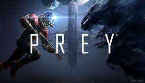

Prey é um jogo de ação e ficção científica em primeira pessoa desenvolvido pela Arkane Studios. O jogo se passa em uma estação espacial chamada Talos I, onde o jogador precisa sobreviver a uma invasão alienígena hostil. O gameplay mistura exploração, combate, furtividade e uso de habilidades especiais obtidas ao longo da progressão. O jogador pode escolher diferentes formas de resolver situações, como combate direto, stealth ou uso criativo de ferramentas e poderes. O jogo se destaca pela liberdade de abordagem, design de níveis interconectados e atmosfera de suspense. Os inimigos podem se disfarçar de objetos comuns, aumentando a tensão durante a exploração. A narrativa é não linear e incentiva a investigação do ambiente para descobrir o que aconteceu na estação. No geral, Prey é uma experiência de ficção científica imersiva com forte foco em exploração e escolhas do jogador.
14+ - recomendado para maiores de 14 anos
A história de Prey se passa em uma linha do tempo alternativa onde a humanidade avançou na exploração espacial. O jogador assume o papel de Morgan Yu, um cientista que acorda em uma estação espacial chamada Talos I após um experimento dar errado e liberar uma ameaça alienígena conhecida como Typhon. Esses alienígenas possuem a habilidade de se transformar em objetos comuns, tornando a sobrevivência dentro da estação extremamente perigosa. Enquanto tenta escapar, Morgan descobre segredos sobre sua própria identidade e decisões passadas que influenciam diretamente os eventos da história. A narrativa envolve escolhas morais e múltiplas abordagens para resolver conflitos, podendo alterar o destino da estação e dos sobreviventes. O jogador encontra registros, gravações e pistas que ajudam a reconstruir o que realmente aconteceu em Talos I. A história explora temas como identidade, ética científica e sobrevivência em situações extremas. O final depende das decisões tomadas ao longo do jogo, permitindo diferentes conclusões para a crise na estação espacial.
5 de maio de 2017
Entre R$30 e R$120 (dependendo de promoções)
Aproximadamente 20 GB